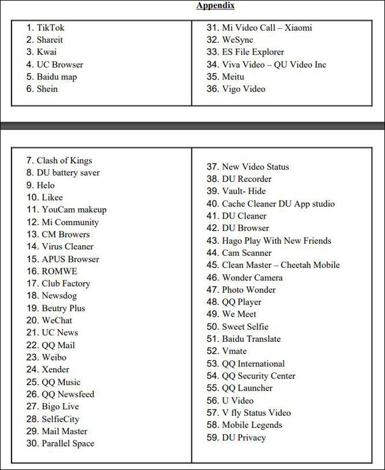

https://baijiahao.baidu.com/s?id=1689927368045662703&wfr=spider&for=pc
印度宣布将永久封禁59款中国APP，包括TikTok、百度、UC浏览器等
2021-01-26 13:48上海观察者信息技术有限公司官方帐号
关注
【编译/观察者网 李焕宇】去年六月，印度曾以捍卫“领土完整性”的名义封禁了包括Tik Tok、微信、百度在内的59款中国应用程序（APP）。如今，印方再次对这些APP下手，宣布把对59款APP实行的禁令“永久化”。
《印度时报》报道截图
据《印度时报》1月26日报道，印度政府在去年6月发布的禁令里并没有把这59款APP彻底堵在门外，而是要求他们回答政府的一连串质疑，涉及数据的收集和处理方法、数据安全及隐私等领域。
但印方对这些APP企业给出的答复并不满意，决定将此前的禁令永久化，涉及的APP包括Tik Tok、微信、百度、UC浏览器、微博、Bigo、小米视频电话、Club Factory等。报道还称，涉事公司在上周就已经各自收到了关于永久禁令的单独通知。
据印度报业托拉斯报道，Tik Tok方面回应称，公司正在评估这则通知，并将做出适当的回应。他们同时表示，TikTok是首批遵守印度政府在6月29日发布的指令的公司之一，Tik Tok一直在努力遵守当地的法律法规，并尽可能解决政府提出的任何疑虑，确保所有用户的隐私和安全仍然是Tik Tok的首要任务。

印度电子和信息技术部此前宣布封禁的59款APP名单
自去年6月以来，印度政府频频打出“维护主权完整、国家安全与公共秩序”的旗号封禁中国APP。
先是在6月29日，宣布封禁包括TikTok、微信、微博在内的59款中国APP；接着又在9月2日宣布封禁包括支付宝、优酷、绝地求生（PUBG）在内的118款中国APP；到了11月24日，印度政府再度以“危害国家安全”为由，封禁包括全球速卖通、钉钉、芒果TV在内的43款APP，其中绝大多数来自中国。
《印度时报》称，自去年6月以来印度政府已经封禁了267款APP，所有涉事公司均被要求提供关于在印业务、用户、数据收集和信息处理等方面的细节信息。
观察者网还发现，前两次印度政府列出专门针对中国APP的封禁名单的时候，印度军队均有在中印边界实施非法越线。此次永久封禁59款中国APP，虽然在中印边界没有再发生先前的非法越线行为，但印度媒体还是无中生有出一起“边境冲突”事件，还谎称至少有20名解放军受伤，以持续渲染中印间的紧张局势。
对于印方的无理封禁，中国外交部发言人曾在去年11月指出，今年6月以来，印方连续4次以所谓维护国家安全为借口，对拥有中国背景的手机应用程序采取禁用措施。有关作法明显违背市场原则和世贸组织规则，严重损害中国企业合法权益，中方对此坚决反对。
赵立坚表示，中国政府一贯要求中国企业在遵守国际规则和当地法律法规的基础上开展对外合作。印度政府有责任根据市场原则，维护包括中国企业在内的国际投资者的合法权益。中印经贸合作的本质是互利共赢。印方应立即纠正这一歧视性做法，避免给双方合作造成更大伤害。
本文系观察者网独家稿件，未经授权，不得转载。
印度民族众多，语言复杂，据有关资料统计，印度共有1652种语言和方言。其中使用人数超过百万的达33种。英语在印度很有影响。除宪法规定的22种语言为联邦官方语言外，还规定英语为行政和司法用语。英语和印地语同为官方语言。北印度语言主要包括印地语和乌尔都语等。
印度語言非常複雜，根據2001年的統計，全印度共有1396種可識別的「母語」(Mother Tongue)。該1396種母語經過語言學的分析，又可以組合成另外的「語言」（Languages）。全印度共有29種語言的使用人口超過一百萬，有121種語言的使用人口超過一萬人，[1]這些語言主要分屬於兩大語系：印歐語系的印度-雅利安語支和達羅毗荼語系，此外還有部分語言屬於漢藏語系的藏緬語族和南亞語系蒙達語族，以及其他一些孤立語言[2]。
印度現時主要官方語言是印地語，第二官方語言為英語[3]，印度憲法規定「聯邦官方語言為使用天城體字母的印地語」[4]，但沒有任何法律規定正式全國通用語言[5]。
印度憲法第八號附表列出了22種語言法定受保護語言，同時亦有另外六種官方認定的古典語言。